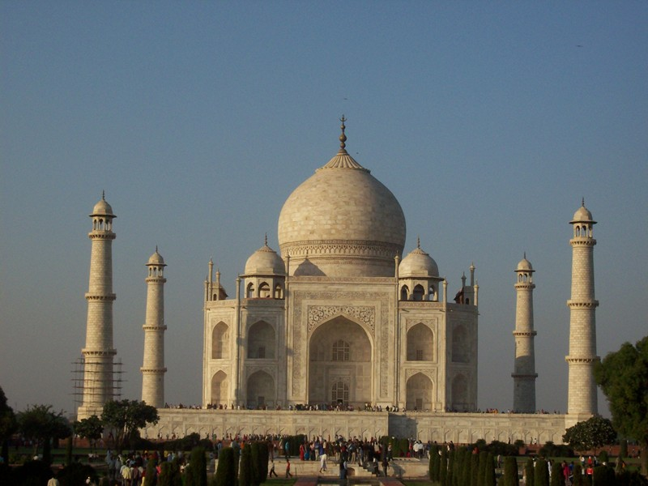
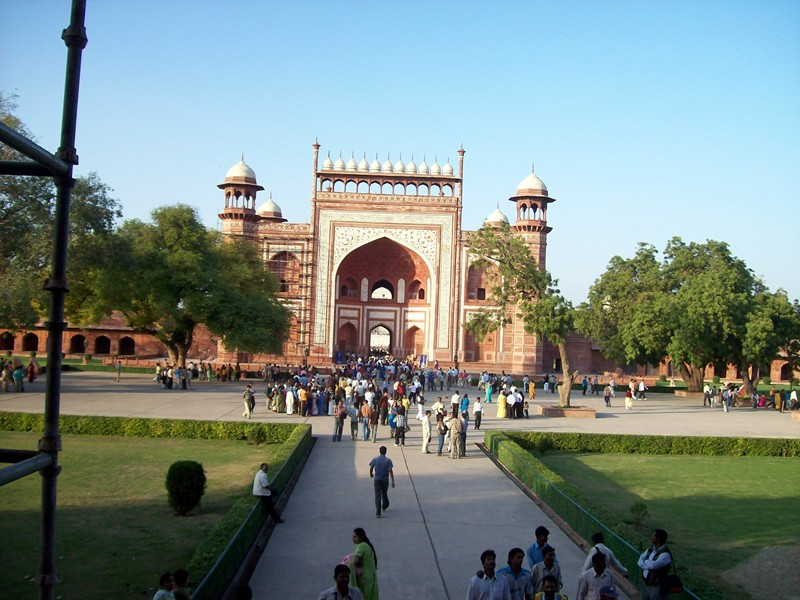
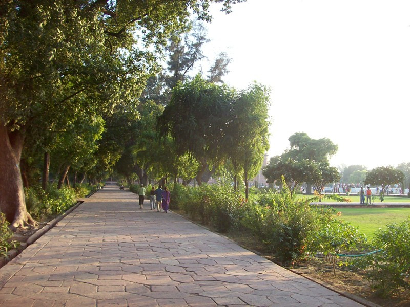
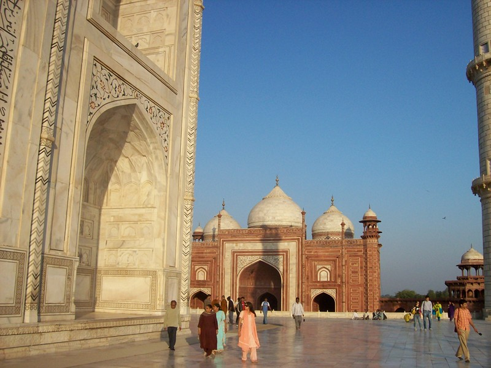
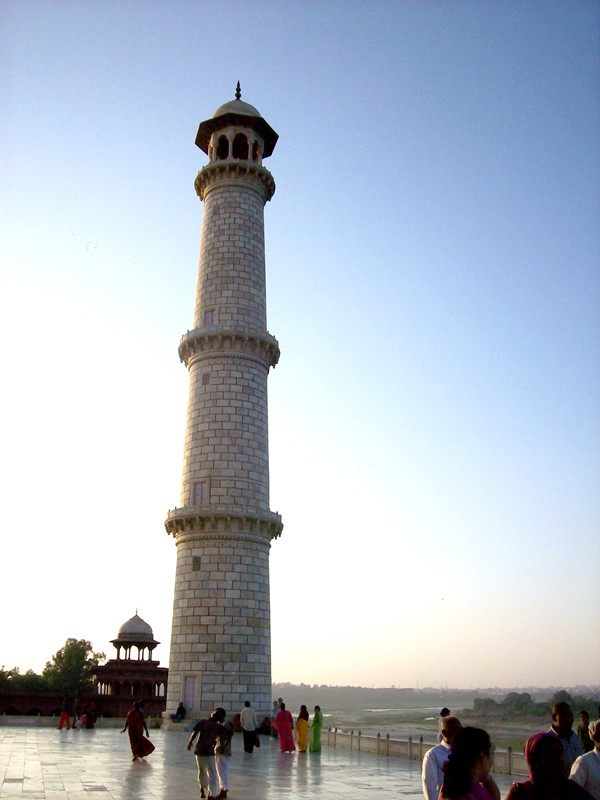

AGRA

I've seen it in a hundred pictures. My jaw still dropped. What doesn't come across in photos is the enormous fine detail you see from this distance. It looks like the structure had to be built by Aes Sedai using the Power; it's to delicate for human hands. Up close, you can see how the effect was achieved: scallopy waves carved on the surfaces on the scale of inches. They don't make visual sense at close range but give a lacy, frothy look from entrance to the compound. Clearly the Taj was meant to be viewed from just that distance.

The building is in a walled compount. Here's the entrance gate as seen with the Taj at my back. You have to check parcels and go through airport-type security to get in. Although a Moslem king built it, Moslems seems to regard it as a prime target, probably because it's art.
Getting from the train station to the Taj involved one of those open-air auctions that Ram revels in. About eight rickshaw wallahs surrounded us. Ram threw open his arms and said (I'm reconstructing this from Hindi) "All right! Who's going to take us to the Taj for Rs. 20?" Someone made a counteroffer. Ram gasped and took his face in his hands. "For that I could buy the building and move it here!" Laughs all around. He made a deal. Half-way to the bicycle taxi the deal came unstuck, He got mad and approached another of the 3 or 4 wallahs who'd been following us in hopes that the deal would collapse. We were on our way for Rs. 35.
I'd been thinking about trying to arrange to work for CSC in India for a year and really see the country. I'd been glancing at the open positions from time to time. Many were for outsourcing-type stuff (boring). Another said "Extensive travel to North America required." This episose was one of several that gave me pause. In many ways, you have to be an insider just to cope with everyday life.

This walk is on the left side of the compount as you face the entrance. At the front wall, not visible through the trees, are the restrooms. I used the foreigner's toilet. Ram had to pay Rs 2 to pee.

This is the real mosque on the right side of the Taj. There's a dummy symmetry mosque on the other side that's not used. To go inside the Taj, you pull operating room booties over your shoes. There was no way mine would fit on my size 15 shoes, but somehow Ram got them on without tearing them.

Left right minaret. The Taj was built by Shah Mumtal to commemorate his wife. His father opposed the project; the Shaw locked him up in a fort barely visible on the skyline, where he lived the rest of his life watching the building go up anway. He planned a black marble mausoleum for himself, but it never happened, and his crypt is in the Taj with his wife's.
Agra is a tough town. Children invite tourists home to share a family meal where they are poisoned (sometimes fatally) as part of an insurance scam. Two of my Aussie friends had children throw rocks at them here years back.
I had no problems, but Ram did. Agra is a two-hour train ride south of Delhi. Going back, we didn't have the class of train seats that Raj wanted. He asked the stationmaster to waitlist us. "Trust me, you'll get your seats", the man said. Ram knew that trust costs Rs. 100. We went and saw the Taj, then came back to the station and located the stationmaster, who waited until the train was about to leave, then walked us to our compartment. Ram slid him the Rs. 100 as we climbed on board. "See the conductor about your seats", the guy said, meaning "So long suckers, you're on your own."
"They always get me here," Ram said sadly.